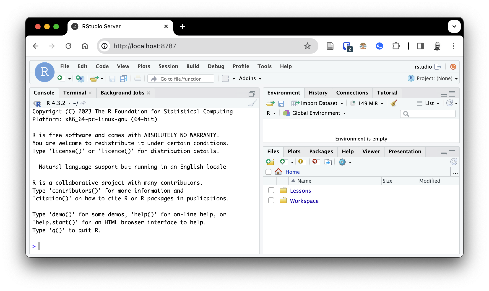
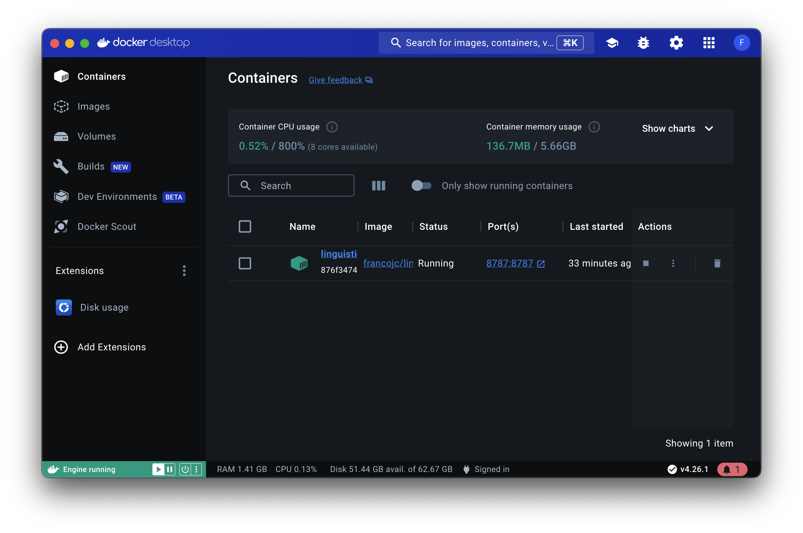
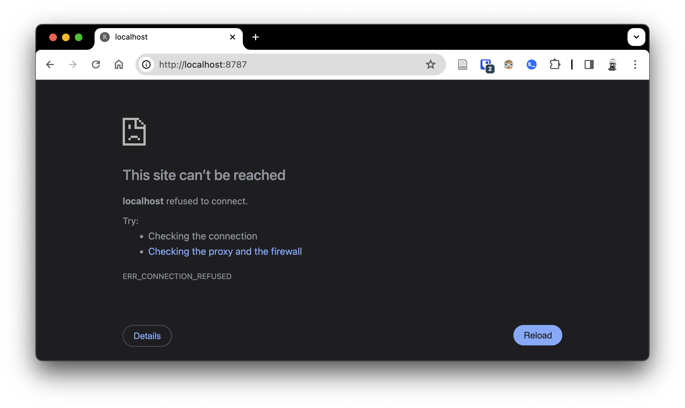

Managing Docker and RStudio Server
This guide assumes you’ve set up a Docker container with RStudio Server according to the instructions in the Getting started guide.
Stop Docker container and RStudio Server
If you are continuing from the Getting started guide, your Docker container is running and RStudio Server is running inside the container, as shown below.
 
The browser window where RStudio Server appears can be closed and reopened at any time. You will not lose any work or data as the Docker container will continue to run in the background.
You could always just leave the Docker container running, the Docker Desktop application will reduce the amount of resources it uses when you are not actively using it. However, You may want to stop the Docker container. You have two options: (1) stop the container and leave Docker Desktop running, or (2) quit Docker Desktop entirely.
To stop the container and leave Docker Desktop running, navigate to the “Containers” tab in Docker Desktop and find the container you want to stop. Click the “Stop” button ‘’ next to the container. Caution: Do not click the “Delete” button ‘’ as this will delete the container and all of its data.

The container will stop and the “Status” column will change to “Exited”. Docker Desktop is running, but the container is not and the connection to the RStudio Server shut down.

To quit Docker Desktop entirely, click the Docker Desktop icon in the menu bar and select “Quit Docker Desktop”. This will stop all running containers and shut down Docker Desktop.
Restart Docker container and RStudio Server
To start Docker Desktop, click the Docker Desktop icon in the menu bar and select “Open Docker Desktop”. This will start Docker Desktop. You will need to wait a few seconds for Docker Desktop to start.
You can then restart the container by navigating to the “Containers” tab in Docker Desktop and clicking the “Start” button ‘’ for your container. Note you will not need to add the configuration options again, as they are saved in the container.

You can now open RStudio Server in your browser again and continue working.